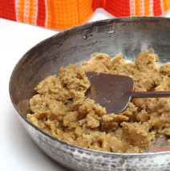

Kansar
Ingredients
1 cup thick Chakki Atta1 cup Jaggery
120 ml Canola Oil
1 tsp Cardamom Powder
2.5 cups Water
Method Preparation
Combine atta with .5 cup canola oil and crumble as for shortcrust. Melt the jaggery in water and bring to a boil. When jaggery syrup starts boiling, whisk in crumbled atta and keep stirring and cooking till syrup is absorbed. THIS MUST BE DONE ON THE LOWEST POSSIBLE FLAME. When all the syrup is absorbed, mix in cardamom powder and 2 tbsp canola oil, cover and cook on a low flame for two more minutes. Serve hot.